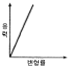
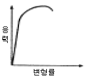
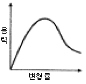
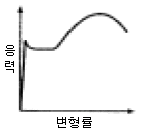
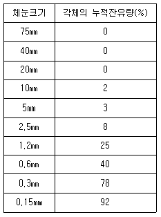
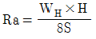
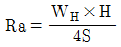
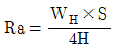
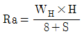

건설재료시험산업기사 (2005-05-29 기출문제)
1과목: 콘크리트공학
1. 어느 정도 콘크리트를 비빈 후 트럭믹서 또는 교반트럭에 투입하여 공사현장에 도달할 때까지 운반시간동안 혼합하여 도착시 완전히 혼합된 콘크리트로서 공급하는 레디믹스트 콘크리트는?
- 센트럴 믹스트 콘크리트
- 쉬링크 믹스트 콘크리트
- 트랜싯 믹스트 콘크리트
- 프리 믹스트 콘크리트
(정답률: 30%)

2. 콘크리트의 치기온도를 낮추기 위하여 콘크리트용 재료를 냉각시키는 것을 나타내는 용어는?
- 프리쿨링(pre-cooling)
- 프리웨팅(pre-wetting)
- 파이프쿨링(pipe cooling)
- 프리캐스팅(pre-casting)
(정답률: 알수없음)
3. 반죽된 콘크리트의 공기량과 기포의 크기에 영향을 주는 요인을 열거한 다음 내용 중에서 틀린 것은?
- 포졸란의 사용량이 많아지면 공기량은 늘어난다.
- 일반적으로 비비는 시간이 짧으면 공기가 많아진다.
- 부배합의 콘크리트에서는 공기량이 줄어든다.
- 시공시에 진동기를 사용하면 공기량이 적어진다.
(정답률: 알수없음)
4. 프리스트레스트 콘크리트중 프리스트레스의 도입을 콘크리트 구조체 경화후에 실시하는 것은?
- 프리팩트(Prepacked)
- 레디믹스트(Ready-mixed)
- 포스트텐션(Post-tension)
- 프리텐션(Pre-tension)
(정답률: 알수없음)
5. 중성화에 대한 설명 중 옳지 않은 것은?
- 시멘트 속의 알칼리 성분이 골재 속의 실리카 성분과 반응하여 발생하는 화학반응이다.
- 물-시멘트비를 작게하고 AE제, 감수제를 사용하면 중성화가 억제된다.
- 중성화시험 방법은 페놀프탈레인 용액을 사용하여 붉은 색으로 변하지 않는 부분은 중성화된 것으로 하여 그 두께를 측정한다.
- 콘크리트가 중성화가 되면 철근이 부식하기 쉽다.
(정답률: 알수없음)
6. 재료의 성질 중 경도의 설명으로 맞는 것은?
- 재료에 인장력을 주었을 때 가늘고 길게 늘어나는 성질
- 작은 변형에도 파괴되는 성질
- 재료를 두드릴 때 얇게 펴지는 성질
- 재료의 절단, 긁기, 마모등에 대한 저항성
(정답률: 알수없음)
7. 시멘트의 성분이 일정할 경우 분말이 미세한 시멘트의 성질중 옳은 것은?
- 초기강도가 작다.
- 색이 어두워지고 비중이 무거워 진다.
- 블리딩이 많고 워커블한 콘크리트가 얻어진다.
- 풍화되기 쉽고 건조수축이 커져서 균열이 발생하기 쉽다.
(정답률: 60%)
8. 콘크리트의 응력-변형률관계를 나타낸 것으로 타당한 것은? (단, x축은 변형률, y축은 응력을 나타냄)




(정답률: 알수없음)
9. 평균값과 범위의 관리도는 어느 것인가?
 관리도
관리도- x 관리도
- P 관리도
- Pn 관리도
(정답률: 34%)
10. 콘크리트 표준시방서에서는 일평균 기온이 최소 얼마 이하일 때 한중콘크리트의 적용을 받도록 규정하고 있는가?
- 4℃
- 0℃
- -2℃
- -5℃
(정답률: 74%)
11. 다음 중 콘크리트 양생에 관한 설명이다. 옳지 않은 것은?
- 콘크리트가 충분히 경화할때까지 충격과 과대한 하중을 가하지 않도록 한다.
- 서리, 일광의 직사, 바람, 비에 대하여 콘크리트의 노출면을 보호한다.
- 타설이 끝난 콘크리트는 일정기간동안 습윤양생을 실시한다.
- 타설이 끝난 콘크리트는 일정기간동안 될 수 있는 한 높은 온도로 양생해야 한다.
(정답률: 100%)
12. 다음 실험방법 중 콘크리트의 반죽질기를 측정하는 시험이 아닌 것은?
- 블리딩 시험
- Vee Bee 시험
- 리몰딩 시험
- 슬럼프 시험
(정답률: 59%)
13. 콘크리트의 시방배합을 현장배합으로 수정할 경우에 반드시 해야 할 실험은?
- 비중, 입도
- 표면수율, 입도
- 안정성, 마모율
- 표면수율, 유기불순물
(정답률: 알수없음)
14. 물-시멘트비를 결정하는 기준으로 가장 거리가 먼 것은?
- 압축강도를 기준으로 결정
- 내구성을 고려하여 결정
- 수밀성을 고려하여 결정
- 잔골재율을 고려하여 결정
(정답률: 알수없음)
15. 골재의 단위 용적질량이 1.65t/m3이고, 굵은골재의 밀도가 2.6g/cm3일 때, 이 골재의 공극률은 얼마인가?
- 36.5 %
- 57.5 %
- 63.5 %
- 70.2 %
(정답률: 34%)
16. 경량골재 콘크리트의 시공과 관련된 설명으로 부적절한 것은?
- 진동기를 사용해서 다짐하는 것은 좋지 않다.
- 골재의 프리웨팅(pre-wetting)이 필요하다.
- 슬럼프가 일반적으로 작게 나오는 경향이 있다.
- 건조균열을 일으키기 쉽기 때문에 양생중 습윤상태를 유지하도록 특히 주의한다.
(정답률: 알수없음)
17. 매스콘크리트의 온도균열을 제어하기 위한 대책이 아닌 것은?
- 프리쿨링(pre-cooling) 방법
- 파이프쿨링(pipe-cooling) 방법
- 플라이애쉬나 고로슬래그 미분말의 사용
- 속경성 시멘트의 사용
(정답률: 알수없음)
18. 프리팩트 콘크리트에 관한 설명으로 잘못된 것은?
- 프리팩트 콘크리트의 주입 모르타르는 보통포틀랜드 시멘트에 플라이애쉬와 같은 혼화재를 사용하면 유리한 점이 있다.
- 수중에서만 시공되고, 공기 중에서는 시공되지 않는다.
- 프리팩트 콘크리트의 강도는 재령 28일 또는 91일의 압축강도를 기준으로 정하고 있다.
- 주입 모르타르용 잔골재의 조립률은 1.4∼2.2 범위가 좋다.
(정답률: 50%)
19. 플라이애쉬를 사용할 경우에 주의할 사항으로 옳지 않은 것은?
- 플라이애쉬는 보존중에 입자가 응집하여 고결하는 경우가 생기므로 저장에 유의하여야 한다.
- 플라이애쉬를 사용한 콘크리트는 소요의 공기량을 얻기위해 AE제의 사용량을 감소시켜야 한다.
- 플라이애쉬는 산업부산물이기 때문에 제조공장, 시기에 따라 품질의 변동이 생기기 쉬으므로 사용할 때 품질을 확인해야한다.
- 플라이애쉬는 수화열을 감소시켜 조기강도가 낮으므로 조기에 강도를 필요로 하는 공사에는 사용해서는 안된다.
(정답률: 알수없음)
20. 강섬유 보강 콘크리트에 대한 내용중 틀린 것은?
- 압축강도가 10-20%정도 증가한다.
- 인장강도는 30-60% 정도 증가한다.
- 콘크리트에 대한 강섬유의 혼합비율의 범위는 용적백분율로 0.5-2%가 일반적이다.
- 휨인성은 보통콘크리트에 비해 현저히 증대하여 약 100배까지 증가시킬 수 있다.
(정답률: 알수없음)
2과목: 건설재료 및 시험
21. 건설공사 품질시험기준중 콘크리트 경계블록 (보·차도용)의 휨강도시험은 몇 매마다 실시하는가?
- 4000매
- 3000매
- 2000매
- 1000매
(정답률: 알수없음)
22. 다음 중 사용량이 많아서 콘크리트의 배합설계에 고려하여야 하는 혼화재료는 어느 것인가?
- AE제
- 감수제
- 지연제
- 슬래그
(정답률: 알수없음)
23. 골재의 체가름 시험결과 각체의 누적잔유량(%)이 다음의 표와 같을 때 조립율은 얼마인가 ?

- 2.70
- 2.48
- 5.40
- 4.96
(정답률: 70%)
24. 플라스틱의 특성에 대한 설명 중 부적당한 것은?
- 전기 절연성이 크다.
- 내열성이 우수하다.
- 내절연성, 전기적 특성이 우수하다.
- 내식성이 양호하다.
(정답률: 알수없음)
25. 강을 가열하거나 냉각시키면 강의 결정이 변화되어 필요한 용도와 목적에 맞는 성질로 변화된다. 이러한 작업과정을 무엇이라 하는가?
- 합금
- 도가니
- 인발작업
- 열처리
(정답률: 80%)
26. 토목섬유(Geotextiles)의 주된 기능이 아닌 것은?
- 혼합기능
- 배수기능
- 분리기능
- 보강기능
(정답률: 알수없음)
27. 다음중에서 폭발력이 강하고 수중(물속)에서도 폭발할 수 있는 다이나마이트(dynamite)는?
- 분상 다이나마이트
- 규조토 다이나마이트
- 교질 다이나마이트
- 스트레이트(straight) 다이나마이트
(정답률: 알수없음)
28. 포졸란 반응(Pozzolanic reaction)의 효과에 대한 설명으로 잘못된 것은?
- 강도와 수밀성이 증대된다.
- 해수에 대한 화학 저항성이 향상된다.
- 재료분리가 적고 워커빌리티가 좋아진다.
- 단위시멘트량이 증가되어 수화열이 커진다.
(정답률: 알수없음)
29. 콘크리트의 골재로서 주변의 강가에서 모래와 자갈을 채취하여 쓰고자 한다. 반드시 하지 않아도 되는 시험은?
- 유기 불순물시험
- 안정성시험
- 염화물시험
- 비중 및 흡수율시험
(정답률: 알수없음)
30. AE 콘크리트의 특성에 관한 설명 중 옳은 것은?
- 콘크리트의 단위중량이 감소하고 철근과의 부착강도가 약화된다.
- 동결 융해에 대한 저항성이 작아지고 수축성도 적게 된다.
- 블리딩(Bleeding)이 감소하고 수밀성도 감소한다.
- 워커빌리티는 양호해지나 재료의 분리가 잘 일어난다.
(정답률: 알수없음)
31. 석재의 모양에 따른 종류에 있어서 나비가 두께의 3배 미만이고, 나비보다 길이가 긴 직육면체형의 석재로 주로 구조용으로 쓰이는 것은?
- 각석
- 판석
- 견치석
- 사고석
(정답률: 34%)
32. 충격에 둔하여 다루기는 쉽고 폭발력은 우수하나 유해한 가스가 발생하고 흡수성이 크므로 터널공사에는 알맞지 않고 큰돌 채취나 토사를 깎는데 사용하는 폭약은?
- 다이너마이트
- 칼릿
- 질산암모늄계폭약
- 니트로글리세린
(정답률: 알수없음)
33. 다음 중에서 역청재의 점도를 측정하는 방법으로 사용되지 않는 것은?
- 엥글러(engler)법
- 세이볼트 프롤(saybolt furol)법
- 크리브랜드(cleveland)법
- 스토머(stomer)법
(정답률: 알수없음)
34. 건설공사 품질시험기준중 흙댐의 중심점토의 시험방법에 포함되지 않는 것은?
- 함수량시험
- 다짐시험
- 현장밀도시험
- 평판재하시험
(정답률: 알수없음)
35. 체가름 시험에서 조립률(FM)=2.9인 잔골재와 조립률(FM)=7.30인 굵은 골재를 1:1.5의 무게비로 섞을 때 혼합골재의 조립률을 구한 값은?
- 4.73
- 5.54
- 5.95
- 5.98
(정답률: 알수없음)
36. 콘크리트의 인장강도를 측정하기 위하여 직경15cm, 길이 30cm의 원주형 공시체를 할열시험한 결과 15t의 하중에서 파괴되었다. 이 때의 인장강도는 얼마인가?
- 23.2kg/cm2
- 21.2kg/cm2
- 22.2kg/cm2
- 25.2kg/cm2
(정답률: 75%)
37. 다음은 풍화한 시멘트의 특성을 열거한 것이다. 맞지 않는 것은?
- 강열감량이 증가한다.
- 비중이 증가한다.
- 응결이 지연된다.
- 강도가 감소한다.
(정답률: 46%)
38. 시멘트의 저장에 대한 설명 중 틀린 것은?
- 시멘트는 품종별로 구분하여 저장하여야 한다.
- 포장시멘트를 저장하는 경우에는 시멘트의 방습에 주의하고 시멘트 창고는 되도록 공기의 유통이 없어야 한다.
- 시멘트 저장소의 바닥은 지상으로부터 30cm 이상 높아야 한다.
- 습기를 흡수하여 덩어리가 된 시멘트는 원래시멘트 입자크기로 분쇄하여 사용하여야 한다.
(정답률: 알수없음)
39. 다음 중에서 아스팔트의 점도(consistency)에 가장 큰 영향을 미치는 것은?
- 아스팔트의 비중
- 아스팔트의 온도
- 아스팔트의 인화점
- 아스팔트의 종류
(정답률: 알수없음)
40. 목재의 전기와 열에 대한 성질을 설명한 것중 옳지 않은 것은?
- 목재에 열을 가하면 섬유방향 보다 직각방향이 더 많이 팽창한다.
- 목재의 인화점은 밀도가 클 수록 낮다.
- 목재의 전기전도도는 밀도가 클 수록 좋아진다.
- 건조된 목재는 저전압에서 전기에 대한 불량도체라고 생각하여도 무방하다.
(정답률: 알수없음)
3과목: 건설시공학
41. 다음 교각에 작용하는 외력(外力)중 연직하중에 관한 것이 아닌 것은?
- 풍압
- 교각의 자중
- 상부구조의 중량
- 교량을 통과하는 활하중
(정답률: 알수없음)
42. 말뚝의 지름이 40cm, 길이가 10m인 말뚝을 햄머무게가 3ton, 추의 낙하고 2m, 1회타격으로 인한 말뚝의 침하량이 1cm일 때 이 말뚝의 허용지지력은? (단, 엔지니어링뉴스 공식으로 단동기 증기햄머 사용)
- 59.74ton
- 69.74ton
- 79.74ton
- 89.74ton
(정답률: 알수없음)
43. Franky 말뚝의 시공방법에 대한 설명중 옳지 않은 것은?
- 시공중 해머는 케이싱 내부 콘크리트를 타격 하므로 소음과 진동이 적어 도심지 시공에 적합하다.
- 묽게 비빈 콘크리트의 반죽을 내관속에 채워 넣은 후 위를 drop hammer로 때린다.
- 강관을 약간 끌어 올려서 지상에 고정시킨 다음 콘크리트에 타격을 가하면 구근이 형성된다.
- 해머의 타격력은 콘크리트와 강관의 마찰저항에 의해 강관이 콘크리트와 같이 땅속에 관입한다.
(정답률: 40%)
44. 다음 중 탬핑 로울러의 종류가 아닌 것은?
- sheeps foot roller
- grid roller
- tapper foot roller
- tire roller
(정답률: 50%)
45. 콘크리트댐의 시공에 관한 설명중 옳지 않은 것은?
- 일반적으로 1리프트의 높이는 1.5m정도로 한다.
- 수평 시공이음 방법에는 경화전 처리법과 경화후 처리법이 있다.
- 콘크리트 냉각은 Pipe Cooling과 Pre -Cooling을 실시한다.
- 시멘트는 수화열이 큰 것을 사용한다.
(정답률: 알수없음)
46. 숏크리트 리바운드(Rebound)량을 감소시키는 방법중 틀린것은?
- 벽면과 직각으로 한다.
- 압력을 일정하게 한다.
- 조골재를 13mm 이하로 한다.
- 시멘트량을 감소시킨다.
(정답률: 알수없음)
47. sand drain 공법에서 모래 기둥의 지름으로 가장 적당한 것은?
- 10 ∼ 15 cm
- 30 ∼ 50 cm
- 50 ∼ 80 cm
- 80 ∼ 100 cm
(정답률: 50%)
48. 토공현장의 다짐도를 판정하는 방법으로 적절하지 못한 것은?
- 상대다짐
- 투수계수
- 상대밀도
- 포화도 또는 공기함유율
(정답률: 50%)
49. 다음 토공에 관한 사항중 틀린 사항은?
- 땅깍기 할 장소에는 도랑 등의 배수시설을 설치하여 흙쌓기 재료의 함수비를 낮추어야 한다.
- 토사 성토고가 1.5m이상인 경우는 벌개제근에 신경 쓸 필요가 없다.
- 철거작업시 발생된 콘크리트는 감독관의 승인을 받은 후에 소요규격으로 부수어 흙쌓기나 기타 공종의 재료로 사용할 수 있다.
- 벌개재근 작업으로 생긴 모든 구멍은 적합한 재료로 되매운 후 다져야 한다.
(정답률: 알수없음)
50. well point 공법이 기초지반에 미치는 영향에 대한 설명 중 옳은 것은?
- 흙속의 간극수를 배제함으로써 토립자는 압축되어 밀도가 커지고 따라서 지반의 강도가 증대된다.
- 이 공법은 점성토지반처럼 투수성이 높은 지반에만 사용 된다.
- 굴착밑면이 매우 느슨하므로 중기계를 사용할 수 없다.
- 이 공법은 토립자의 밀도가 느슨하게 되므로 Roller로 다져야 한다.
(정답률: 10%)
51. 댐의 부대설비를 설명한 것 중 틀린 것은?
- 취수설비에는 사통이나 취수탑 등이 있다.
- 수문시설은 콘크리트댐의 여수토 물넘이에 수문을 설치하여 홍수 유출량을 조절하는 가동댐 방식을 채용하는 경우에 필요하다.
- 배사구는 저수지 바닥의 가장 높은 곳에 설치한다.
- 여수토의 홍수용량 부족이 댐 파괴원인 중 주원인이다.
(정답률: 알수없음)
52. 배토판을 트랙터의 중심축에 직각으로 부착하여 날판의 위쪽을 앞뒤로 기울게 할 수 있으며 가장 많이 사용되는 도저는?
- 스트레이트도저
- 앵글도저
- 틸트도저
- 레이크도저
(정답률: 알수없음)
53. 횡선공정표(bar chart)의 장점에 관한 설명 중 옳지 않은 것은?
- 각공정별 공사와 전체의 공정시기등이 일목요연하다.
- 각공정별 공사의 착수 및 완료일이 명시되어 판단이 용이하다.
- 공정표가 단순하여 경험이 적은 사람도 이용하기가 쉽다.
- 작업상호간의 관계가 분명하고 관리 통제가 쉽다.
(정답률: 50%)
54. 화약류를 취급할 때 주의할 사항 중 옳지 않은 것은?
- 화약류는 두들기든지 던지든지 떨어뜨리는 일이 없어야한다.
- 전기뇌관은 전지, 전선, 레일, 철관 등에 닿지 않도록 해야 한다.
- 화약류가 들어있는 통을 열 때는 철제기구 등으로 조심성 있게 열어야 한다.
- 발파현장에는 여분의 화약류를 지입하지 말아야 한다.
(정답률: 알수없음)
55. 도로의 아스팔트 포장두께를 결정하는 시험 방법은?
- CBR 시험
- 일축압축강도시험
- 삼축압축강도시험
- 표준관입시험
(정답률: 65%)
56. 연약 점성토층을 관통하여 철근콘크리트 파일을 박았을 때 부마찰력의 값은 어느 것인가? (단, 지반의 일축압축강도 qu=3t/m2, 지름=50cm, 관입깊이=15m이다.)
- 25.3t
- 35.3t
- 45.3t
- 55.3t
(정답률: 알수없음)
57. 콘크리트 포장의 미끄럼 저항성을 크게 하기 위하여 실시하는 표면 마무리는?
- 초벌마무리
- 거친면마무리
- 평탄마무리
- 간이마무리
(정답률: 82%)
58. 다음 중 옹벽의 안정검토 항목에 포함되지 않는 것은?
- 활동에 대한 안정
- 전도에 대한 안정
- 지반 지지력에 대한 안정
- 수동토압에 대한 안정
(정답률: 알수없음)
59. 쉴드(shield)공법을 사용하는 경우에 대한 설명으로 옳지 않은 것은?
- 노면교통이 포화상태가 되어 이에 지장을 주지 않을 공법이 필요할 때
- 기설 지하철과 입체교차가 많을 때
- 강도가 큰 암반 구조일 때
- 소음 규제법에 저촉되어 개거 공법이 불가능 할 때
(정답률: 59%)
60. 토량의 변화율이 L=1.1, C=0.9인 흙을 굴착운반하여 40000m3를 성토할 때 운반토량은 얼마인가?
- 44,000m3
- 48,889m3
- 36,363m3
- 44,444m3
(정답률: 55%)
4과목: 토질 및 기초
61. 사질토의 정수위 투수 시험을 하여 다음의 결과를 얻었다. 투수계수는 얼마인가? (단, 투수량 Q = 400㏄,시료의 직경 d = 10㎝, 투수시간 t = 180초, 수두차 h = 15㎝, 시료의 길이 L = 12㎝)
- 2.26 x 10-2㎝/sec
- 1.76 x 10-2㎝/sec
- 1.63 x 10-2㎝/sec
- 0.99 x 10-2㎝/sec
(정답률: 알수없음)
62. 점토 광물중에서 3층 구조로 구조결합 사이에 치환성 양이 온이 있어서 활성이 크고, sheet 사이에 물이 들어가 팽창, 수축이 크고 공학정 안정성은 제일 약한 점토 광물은?
- kaolinite
- illite
- montmorillonite
- vermiculite
(정답률: 알수없음)
63. 지표면에 8t의 집중하중이 작용할 때 하중작용 위치 직하 2m 위치에 있어서의 연직응력은 약 얼마인가? (단, 영향치는 0.4775임)
- 4.0t/m2
- 1.0t/m2
- 2.0t/m2
- 6.0t/m2
(정답률: 43%)
64. 점성토 지반에 사용하는 연약지반 개량공법으로 거리가 먼 것은?
- Sand drain 공법
- 침투압 공법(MAIS 공법)
- Vibro floatation 공법
- 생석회 말뚝 공법
(정답률: 알수없음)
65. 흙중의 한점에서 최대 및 최소 주응력이 각각 1㎏/cm2 및0.6㎏/cm2일 때, 이 점을 지나 최소 주응력면과 60도를 이루는 면상의 전단응력은?
- 0.10㎏/cm2
- 0.17㎏/cm2
- 0.40㎏/cm2
- 0.69㎏/cm2
(정답률: 14%)
66. 직경 5cm, 높이 10cm인 연약점토 공시체를 일축압축시험한 결과 파괴시 압축력이 2.2kg, 축방향변위가 9mm이었다면 일축압축강도(qu)는?
- qu = 0.3 kg/cm2
- qu = 0.2 kg/cm2
- qu = 0.25 kg/cm2
- qu = 0.1 kg/cm2
(정답률: 알수없음)
67. 충분히 다진 현장에서 모래 치환법에 의해 현장밀도 실험을 한 결과 구멍에서 파낸 흙의 무게가 1530g, 함수비가 14%이었고 구멍에 채워진 단위중량이 1.70g/cm3인 표준모래의 무게가 1400g이었다. 이 현장이 95% 다짐도가 된 상태가 되려면 이 흙의 실내실험실에서 구한 γdmax은 다음 중 어느 것인가?
- 1.72g/cm3
- 1.76g/cm3
- 1.79/cm3
- 1.83g/cm3
(정답률: 알수없음)
68. 내부마찰각 ♀=0인 점토에 대하여 일축압축실험을 하였더니 일축 압축강도가 qu=5.6kg/cm2 이었다. 이 흙의 점착력은?
- 2.4kg/cm2
- 2.8kg/cm2
- 1.2kg/cm2
- 1.8kg/cm2
(정답률: 82%)
69. 동상을 방지하기 위한 대책으로 잘못 설명된 것은?
- 배수구를 설치하여 지하수위를 저하시킨다.
- 지표의 흙을 화학약액으로 처리한다.
- 흙 속에 단열재를 설치한다.
- 모관수를 차단하기 위해 세립토층을 지하수면 위에 설치한다.
(정답률: 알수없음)
70. 주동토압계수 KA, 수동토압계수 KP, 정지토압계수 Ko의 크기가 맞는 것은?
- KA ＞ KP ＞ Ko
- KP ＞ Ko ＞ KA
- KA ＞ Ko ＞ KP
- Ko ＞ KP ＞ KA
(정답률: 알수없음)
71. 점토시료를 가지고 압밀시험을 하였다. 다음 설명중 틀린 것은?
- 압밀하중을 가하면 간극률은 작아진다.
- 과잉간극수압이 소산되면 1차 압밀이 완료된 것이다.
- 압밀하중을 제거하면 간극률은 커진다.
- 단단한 점토일수록 압축지수가 크다.
(정답률: 알수없음)
72. 표준관입 시험에서 N치에 대한 설명으로 옳은 것은?
- 스프릿스푼 샘플러를 주어진 에너지로 타격할 때 20㎝ 관입하는데 소요되는 타격회수이다.
- 스프릿스푼 샘플러를 주어진 에너지로 타격할 때 30㎝ 관입하는데 소요되는 타격회수이다.
- 스프릿스푼 샘플러를 주어진 에너지로 타격할 때 20㎝ 관입하는데 소요되는 타격당 침하량이다.
- 스프릿스푼 샘플러를 주어진 에너지로 타격할 때 30㎝ 관입하는데 소요되는 타격당 침하량이다.
(정답률: 20%)
73. CBR에 대한 설명중 옳지 않은 것은?
- CBR 값은 강성포장의 두께를 결정하는데 주로 쓰이는 값이다.
- CBR 시험은 실내에서 수행할 수도 있고 현장에서도 수 행할 수 있다.
- 다짐한 흙시료에 직경 5㎝의 강봉을 관입시켰을 때의 관입량과 하중강도와의 비를 백분율로 표시한 값이다.
- CBR5.0 ＞ CBR2.5의 경우 재시험하고 그래도 CBR5.0가 CBR2.5보다 클 때는 CBR5.0 값을 CBR 값으로 한다.
(정답률: 알수없음)
74. 사질지반에 있어서 강성기초의 접지압 분포에 관한 다음 설명 중 옳은 것은?
- 기초의 모서리 부분에서 최대응력이 발생한다.
- 기초의 중앙부에서 최대응력이 발생한다.
- 기초의 밑면에서는 어느 부분이나 동일하다.
- 기초 밑면에서의 응력은 토질에 상관없이 일정하다.
(정답률: 알수없음)
75. 말뚝의 허용지지력을 구하는 Sander의 공식은? (단, Ra:허용지지력, S:관입량, WH:해머의 중량)




(정답률: 알수없음)
76. 다음중 사운딩(sounding)이 아닌 것은?
- 표준관입시험
- 일축압축시험
- 원추관입시험
- 베인시험
(정답률: 알수없음)
77. 풍화작용에 의하여 분해되어 원 위치에서 이동하지 않고 모암의 광물질을 덮고 있는 상태의 흙은?
- 호상토(Lacustrine soil)
- 충적토(Alluvial soil)
- 빙적토(Glacial soil)
- 잔적토(Residual soil)
(정답률: 알수없음)
78. 연약점토지반을 굴착할 때 sheet pile을 박고 내부의 흙을 파내면 sheet pile 배면의 토괴중량이 굴착 저면의 지지력과 소성평형상태에 이르러 굴착 저면이 부푸는 현상은?
- heaving
- boiling
- quick sand
- slip
(정답률: 50%)
79. 다음의 토질정수중에서 사면안정 검토에 직접적인 영향을 끼치지 않는 것은?
- 흙의 단위 중량(γt)
- 흙의 내부마찰각(ø)
- 흙의 소성지수(PI)
- 흙의 점착력(C)
(정답률: 알수없음)
80. 사질토층에 물이 침투할 때 침투유량이 같은 조건에서 만약 사질토의 입경이 2배로 커진다면 침투 동수구배는 몇 배로 변하는가?
- 4 배
- 1/4 배
- 2 배
- 1/2 배
(정답률: 알수없음)